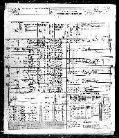
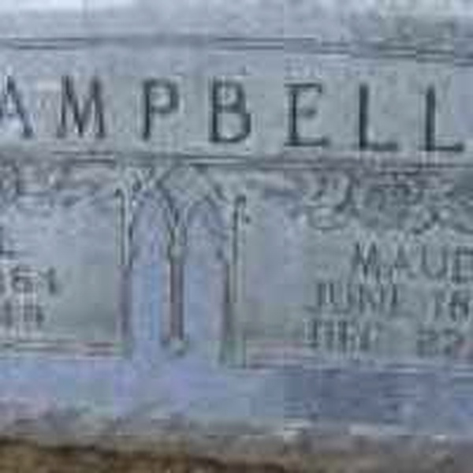

Ora Foster Campbell
18 June 1898 – 9 May 1988
Quick Facts
Immediate Family
Spouse
Logan Ira Campbell, married 22 September 1918 in Liberty, Casey County, Kentucky; listed on both published FamilySearch profiles. SUPPORTEDParents
Charles Thomas Foster (1874–1962) and Mary Cordellia Williams Foster (1872–1952). Both are named as Ora’s parents on her public FamilySearch profile and linked as her parents in her Find a Grave family list; these are compiled/user-contributed sources, not an original parent-child record. SUPPORTEDChildren
- Nelma Campbell (1920–deceased; FamilySearch) SUPPORTED
- James Otis Campbell (1920–1976) SUPPORTED
- Logan Ray Campbell (1927–2017) SUPPORTED
- Robert Lee Campbell (1931–1954) SUPPORTED
- Edward Thomas Campbell (1932–1995) SUPPORTED
- Ernest Franklin Campbell (1935–1994) SUPPORTED
- Samuel Eugene “Sam” Campbell (1937–1998) DOCUMENTED
- Virginia Elece Campbell (1942–2011) SUPPORTED
FamilySearch lists eight children. Ora’s Find a Grave memorial’s child links instead use Naomi Campbell Reeves (1919–1985) for the eldest daughter and list four other children. Naomi/Nelma identity is unresolved; the lists do not match in full.
Siblings
- Rose/Rosa Foster Witt (1900–1986)
- Ernest Foster (1902–1924)
- Clyde Foster (1903–1985)
- Grace A. Foster Bell (1904–1994)
- Bess Foster Bell (1906–1995)
- William Foster (1908–1996)
- Short Foster (1909–1988)
- Mae Foster Farris (1914–2001)
- Stillborn Foster (1913; listed in the FamilySearch parents’ family timeline; no sex or given name shown)
The published FamilySearch family group and Ora’s Find a Grave memorial overlap on the named siblings. Rose/Rosa is a source spelling difference; these remain compiled family-group / memorial links, not independently checked sibling records. SUPPORTED
On Family Tree Sites
Couple Folder
Life Timeline
18 June 1898 Born in Casey County, Kentucky according to FamilySearch’s published profile and Find a Grave memorial. SUPPORTED
22 September 1918 Married Logan Ira Campbell in Liberty, Casey County; date/place are given on both public FamilySearch profiles. The original marriage entry has not been inspected. SUPPORTED
2 February 1937 Son Samuel Eugene Campbell born in Casey County; the Kentucky birth-index entry names Ora Foster as his mother. Index evidence. DOCUMENTED
1940 Listed in a Dunnville, Casey County household with husband Logan and son Samuel in the census index; original schedule not inspected in this pass. SUPPORTED
1950 Listed with Logan and son Samuel in Dunnville; FamilySearch indexes her name as “Ara.” The public source-card image is only a 172×200-pixel thumbnail. SUPPORTED
9 May 1988 Died in Liberty, Casey County, and buried at Salem United Methodist Church Cemetery, per the FamilySearch published profile and Find a Grave memorial. No original death certificate reviewed. SUPPORTED
Life Story
Ora “Doll” Foster Campbell’s public FamilySearch profile and Find a Grave memorial agree on her birth (18 June 1898), marriage to Logan Ira Campbell (22 September 1918), death (9 May 1988), Liberty/Casey County setting, and Salem United Methodist Church Cemetery burial. Her public profile identifies Charles Thomas Foster and Mary Cordellia Williams as her parents, a claim also reflected by the memorial’s linked family list. Those two compiled sources support the working relationships, but the underlying birth, marriage, death, and parentage records have not been inspected here. The sources also disagree about their eldest daughter: FamilySearch lists Nelma Campbell (1920), while the Find a Grave memorial links Naomi Campbell Reeves (1919). Keep these names distinct pending an identity bridge.
Photo Gallery


Sources and Evidence
- FamilySearch, Ora Foster, L6XR-SWY: published profile (24 source entries; first visible cards are 1950 census, Kentucky county marriages, and WWII draft registration). Gives birth/death, parents/sibling group, spouse/children, and burial. Compiled profile; source originals not reviewed here. SUPPORTED
- Find a Grave, Ora “Doll” Foster Campbell, Memorial 23366609: user-contributed memorial; lists headstone photo, exact dates, Salem UMC Cemetery, parents Charles Thomas and Mary Cordia “Cord” Williams Foster, eight siblings, spouse Logan, and five children. Memorial claims only. SUPPORTED
- FamilySearch, Logan Ira Campbell, L6XR-9BZ: published spouse profile independently lists marriage 22 September 1918 and eight children. Compiled profile. SUPPORTED
- FamilySearch, “Ara Campbell, United States Census, 1950,” visible source card on L6XR-SWY profile: thumbnail saved at 172×200 px; indexes name as Ara. Census original and full record detail not reviewed. SUPPORTED
- FamilySearch, “Ora Campbell, Kentucky, County Marriages, 1786–1965,” visible source card on L6XR-SWY profile: thumbnail saved at 200×158 px; the underlying record is not legible/verified here. SUPPORTED
- FamilySearch, Kentucky birth index: Samuel Campbell, born 2 February 1937 in Casey County; mother “Ora Foster.” Index entry only; cited in the existing Samuel family research. DOCUMENTED
- FamilySearch, 1940 U.S. Census index: Logan, Ora, and son Samuel in Dunnville, Casey County; names and ages as indexed, not original image. SUPPORTED
- FamilySearch, 1956 Kentucky marriage register, image 1346 of 1,411: Samuel Campbell and Janice Elaine Woodrum; register names Logan Campbell and Ora Campbell as Samuel’s parents. Original image reviewed in prior Samuel research. DOCUMENTED
Research Notes and Open Questions
- The exact birth/death dates and locality are reported by two public compiled profiles (FamilySearch and Find a Grave); original birth and death certificates have not been inspected. Replace the older note claiming exact dates are unknown with this source-status distinction.
- The 22 September 1918 marriage is listed on the published FamilySearch profiles for Ora and Logan. Ora’s source-card thumbnail is not sufficient to establish the record image or the officiant/parents; obtain and inspect the marriage bond/register if available.
- The two public source card thumbnails (1950 census and county marriages) are archived in the Gen VII couple Pictures folder and Ora Profile Files. They remain thumbnails, not full record images. The WWII draft source-card thumbnail request was blocked (HTTP 403); page still lists that source.
- FamilySearch public profiles identify parents Charles Thomas Foster and Mary Cordellia Williams; Ora’s memorial links the same parents. Working placement: SUPPORTED, not DOCUMENTED by a direct record. Parent couple now has its own Gen VII research folder and profile pages.
- FamilySearch public parent-family timelines list ten children and include a stillborn child in 1913; the memorial links eight named siblings. Rose/Rosa differs by source. No original birth, census, or obituary records were inspected for every sibling.
- FamilySearch lists Nelma Campbell (1920–deceased); Ora’s Find a Grave memorial links Naomi Campbell Reeves (1919–1985). Do not merge without an identity bridge.
- The 2026 “Seedlings of William Foster” book was checked; text has no Ora/Charles Thomas Foster/Campbell match, so it is not used as evidence for this Casey County branch.
DNA
No DNA matches linked yet.
Family Notes
Research notes and source inventory are in the couple folder’s Notes directory; no Google Docs were created or edited.
An American Bloodline · Generation VII